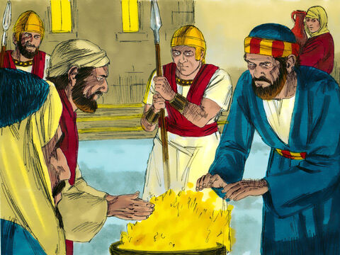
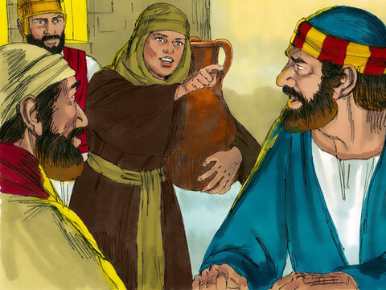
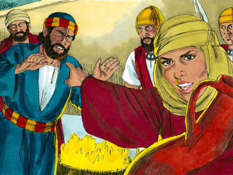
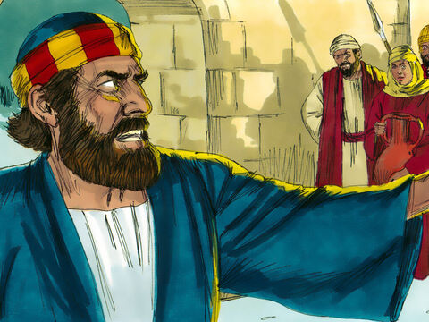
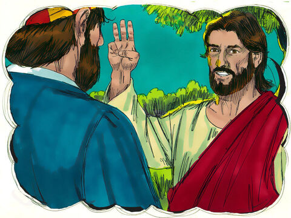
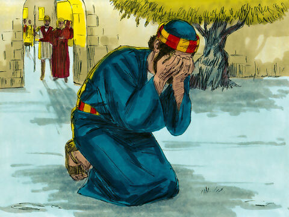

Peter Denies Lord Jesus
Now Peter sat without in the palace: and a damsel came unto him, saying, Thou also wast with Jesus of Galilee.
But he denied before them all, saying, I know not what thou sayest.
And when he was gone out into the porch, another maid saw him, and said unto them that were there, This fellow was also with Jesus of Nazareth.
And again he denied with an oath, I do not know the man.
And after a while came unto him they that stood by, and said to Peter, Surely thou also art one of them; for thy speech bewrayeth thee.
Then began he to curse and to swear, saying, I know not the man. And immediately the cock crew.
And Peter remembered the word of Jesus, which said unto him, Before the cock crow, thou shalt deny me thrice. And he went out, and wept bitterly.
Matthew 26:69-75
- 
- 
- 
- 
- 
- 